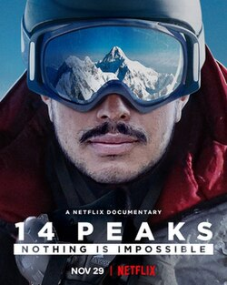
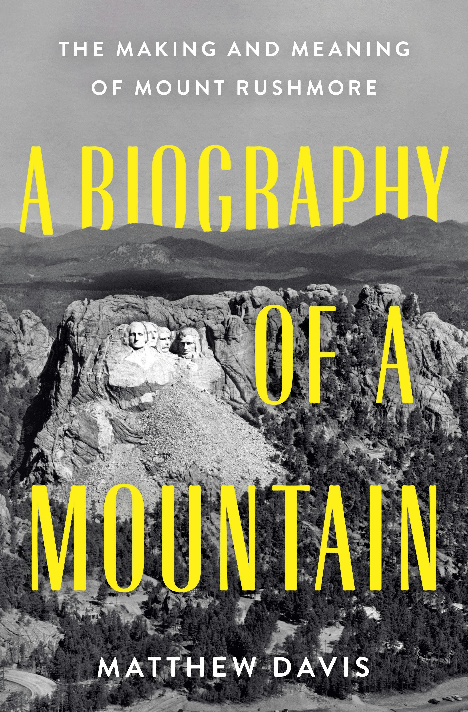
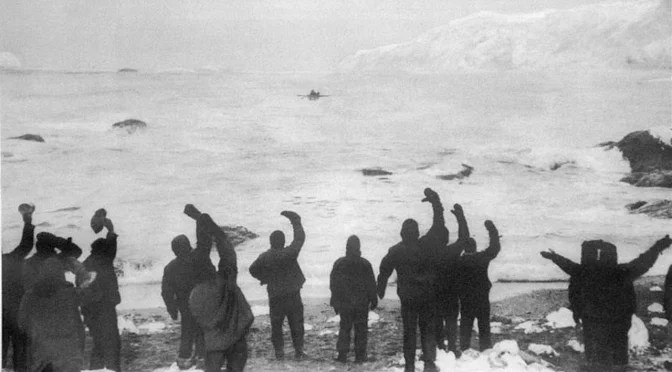

1. 14 Peaks: Nothing Is Impossible
- Release: 2021
- Director: Torquil Jones
- Starring: Nirmal “Nimsdai” Purja
- Where to Watch: Netflix
Nirmal “Nimsdai” Purja sets out to climb all 14 of the world’s 8,000-meter peaks in under seven months — a feat once thought impossible. The film tracks logistics, the intensity of back-to-back high-altitude pushes, and the toll on a tight, disciplined team. You see rescues, weather windows blown and last-minute decisions laid bare. Visually it's engrossing; emotionally it’s about leadership, Nepali pride, and rewriting what the sport considers doable.

2. The Ghosts Above
- Release: 2020
- Director: Renan Ozturk
- Starring: Renan Ozturk
- Where to Watch: YouTube / Festival screenings
Renan Ozturk mixes expedition footage with artful reflections as he probes the Mallory mystery and climbs on Everest’s less-traveled ridges. The film blends history and high-altitude journalism into a contemplative piece about memory and obsession. It’s quieter than mainstream adventure docs, favoring painterly shots and thoughtful interviews over adrenaline spectacle. The result feels intimate and reflective, with a constant awareness of the mountain’s layered past.

3. Meru
- Release: 2015
- Director: Jimmy Chin & Elizabeth Chai Vasarhelyi
- Starring: Conrad Anker, Jimmy Chin, Renan Oztürk
- Where to Watch: Netflix / Prime Video
Meru follows three climbers over years as they attempt the Shark’s Fin route — first suffering a heartbreaking retreat, then returning for redemption. Cinematic vertical footage puts you on the wall while intimate moments reveal the cost of obsession: frostbite, fractured relationships, and the long work behind an “overnight” summit. It’s a film about friendship and the stubbornness required to finish what was once impossible.

4. Free Solo
- Release: 2018
- Director: Elizabeth Chai Vasarhelyi & Jimmy Chin
- Starring: Alex Honnold
- Where to Watch: Disney+ / VOD
Free Solo captures Alex Honnold’s rope-free ascent of El Capitan with tension that never lets up. The film balances breathtaking, terrifying climbing sequences with probing interviews about risk, relationships, and how a person prepares to perform without a safety line. Filmmakers handle the ethical tightrope carefully — the result is a moving portrait of mastery that never glamorizes danger for its own sake.

5. The Alpinist
- Release: 2021
- Director: Peter Mortimer & Nick Rosen
- Starring: Marc-André Leclerc
- Where to Watch: Streaming platforms / VOD
The Alpinist chronicles Marc-André Leclerc, a largely unknown Canadian climber whose solo, alpine-style ascents pushed extremes away from publicity. The film juxtaposes elegant, solitary climbing sequences with intimate portraits of friends who admired him, showing the quiet dedication behind headline-grabbing feats. It’s an elegy to a quiet form of climbing where lines and purity mattered more than fame.
6. The Summit
- Release: 2012
- Director: Nick Ryan
- Starring: Survivors and archival footage
- Where to Watch: Documentary platforms / VOD
Reconstructing the tragic 2008 K2 season, The Summit pieces together chaos, weather and small mistakes that led to catastrophe. Using survivor testimony and archival images, the film reads like careful forensic journalism: methodical, haunting and precise. It strips away myths to examine how a series of events — one after another — can overwhelm even experienced teams on a hostile mountain.

7. Touching the Void
- Release: 2003
- Director: Kevin Macdonald
- Starring: Joe Simpson, Simon Yates
- Where to Watch: Streaming / DVD
Based on Joe Simpson’s true story, Touching the Void is a stark retelling of survival and moral complexity after a near-fatal fall in the Peruvian Andes. The film mixes re-enactment with first-person interviews, making the physical ordeal visceral and the ethical dilemmas enduring. It’s a raw, unglorified study of survival, guilt and the limits of human endurance.
 - IMDb.png)
8. Sherpa
- Release: 2015
- Director: Jennifer Peedom
- Starring: Chhiring Dorje, Ang Rita Sherpa (and others)
- Where to Watch: Festival circuits / Streaming
Sherpa centers the Nepali workers who make Everest seasons possible. After the 2014 Khumbu ice-fall killed sherpas, the film follows the social fallout — protests, demands for respect and debate over compensation. It’s an essential corrective to summit-centric films, giving voice and agency to those who shoulder the mountain’s risk and business. Powerful, necessary and humanizing.

9. Everest
- Release: 1998
- Director: David Breashears
- Starring: Expedition teams / Real climbers
- Where to Watch: DVD / Select streaming
David Breashears’ Everest captures a pre-boom era of expedition life on the world’s highest peak. The film documents large logistical efforts, weather drama and the physical reality of high-altitude work. It’s observational and cinematic, providing a solid historical snapshot of how Everest expeditions operated near the turn of the century.
10. The Wildest Dream
- Release: 2010
- Director: Anthony Geffen
- Starring: Conrad Anker, archival footage of George Mallory
- Where to Watch: Streaming / VOD
The Wildest Dream revisits George Mallory’s life and the enduring question of whether he reached Everest’s summit in 1924. Conrad Anker’s personal search adds a contemporary emotional pull — the film becomes a dialogue between present-day climbers and the ghosts of early explorers. History and adventure meet in sweeping Himalayan cinematography and careful archival storytelling.

11. The Dawn Wall
- Release: 2017
- Director: Josh Lowell & Peter Mortimer
- Starring: Tommy Caldwell, Kevin Jorgeson
- Where to Watch: Streaming platforms / VOD
The Dawn Wall tracks a multi-year campaign to free-climb one of El Capitan’s hardest pitches. The film’s emphasis is the accumulation of work: repeated failures, tiny adjustments, and the partnership that makes a steep wall manageable. The final push is suspenseful, but the movie’s lasting impression is the long-term patience and creativity required for truly difficult climbs.

12. Valley Uprising
- Release: 2014
- Director: Peter Mortimer & Nick Rosen
- Starring: Historical climbers (interviews & archive)
- Where to Watch: Streaming / VOD
Valley Uprising is a rollicking oral history of Yosemite climbers and the culture they built — from countercultural beginnings to modern athleticism. It’s part social history, part climbing lore, filled with colorful personalities and crucial innovations. The film’s energy and soundtrack make it an entertaining deep dive for anyone curious about where modern climbing culture came from.

13. The Beckoning Silence
- Release: 2007
- Director: Louise Osmond
- Starring: Joe Simpson (narration/insight)
- Where to Watch: TV / Documentary outlets
With Joe Simpson as guide, The Beckoning Silence explores the Eiger’s deadly past and the psychology of why climbers pursue danger. It’s reflective and literary rather than spectacle-driven, using history to examine contemporary choices. The film is haunting and thoughtful — ideal for viewers who want to grapple with motivation, regret and the mountain’s moral grammar.

14. Beyond the Edge
- Release: 2013
- Director: Leanne Pooley
- Starring: Edmund Hillary, Tenzing Norgay (archive/reenactment)
- Where to Watch: Streaming / VOD
Beyond the Edge revisits the 1953 Everest expedition with archival footage and measured reenactments. The documentary emphasizes the human logistics, the personalities and the accidental moments that made that first summit possible. It’s accessible history — respectful and well-paced — useful for anyone wanting a clear story of mountaineering’s landmark event.

15. K2: Siren of the Himalayas
- Release: 2012
- Director: David Douglas
- Starring: Expedition climbers (various)
- Where to Watch: Select streaming / festival showings
This film explores K2’s fierce reputation and the stubborn attraction it holds for climbers. Through interviews, footage and atmospheric sequences, it shows why K2 resists easy commercialization and why its seasons are often defined by tragedy and triumph in equal measure. The movie is reverent and contemplative, emphasizing cost and consequence on a mountain that rarely yields forgiveness.
16. Everest: Beyond the Limit (series)
- Release: 2006–2009
- Director: Various (TV series)
- Starring: Commercial expedition teams
- Where to Watch: Documentary channels / DVD
This series embeds camera crews with commercial expeditions to show the business, stress and drama of modern Everest seasons. Over several seasons it reveals leadership decisions, client dynamics and the logistics of moving hundreds of people through a lethal environment. For a practical, episodic look into commercial Himalayan guiding, this is very informative.

17. The Alps
- Release: 2007
- Director: Phil Grabsky
- Starring: Alpine historians & climbers
- Where to Watch: Cultural documentary platforms
A broad cultural and natural history of the European Alps, this film interweaves mountaineering milestones with community life, environment and tourism. It’s not a single ascent film but a panoramic look at how mountains shape identity and economy. Beautiful landscapes and thoughtful interviews make it a calm, educational watch.
 - I.png)
18. Annapurna: First Conquest (archival)
- Release: Archival compilation
- Director: Various archival compilers
- Starring: Maurice Herzog / 1950s expedition archives
- Where to Watch: Archives / museum collections
This archival documentary revisits the 1950 Annapurna expedition and its toll on human bodies and psyche. The historical footage feels raw and sobering: triumph wrapped in extreme hardship. It’s a lens into early Himalayan exploration when equipment and medical support were rudimentary compared to today.

19. High-Altitude Profiles (anthology)
- Release: Various (1990s–2020s)
- Director: Various
- Starring: Mix of mountaineers and local communities
- Where to Watch: Festival anthologies / online archives
A curated set of shorts spotlighting lesser-known Himalayan stories: rescue missions, porter perspectives, and village narratives often overlooked by feature films. These compact films are direct and raw, and together they broaden the mountaineering story beyond famous summits to the people and places that sustain expeditions.

20. Into Thin Air: The Documentary Retrospective
- Release: Late 1990s–2000s retrospectives
- Director: Various
- Starring: Survivors, journalists, rescuers
- Where to Watch: TV specials / streaming retrospectives
Following the 1996 Everest disaster, numerous retrospectives examine decision-making, commercial pressures and weather factors. These documentaries combine interviews and analysis to extract lessons and understand group dynamics under extreme stress. They’re cautionary, reflective, and essential context for modern expedition ethics.

21. Expedition: Long Routes & Small Teams
- Release: 2000s–2020s (various)
- Director: Independent filmmakers
- Starring: Small climbing teams
- Where to Watch: Film festivals / VOD
A collection of grassroots films that document small-team, long-route alpine climbs. Often filmed by the participants themselves, these pieces show improvisation, seamanship and the slow art of alpine pushing. They highlight the craft of route-finding and patience more than big headlines.

22. Mountain Rescue Stories
- Release: Various (2000s–2020s)
- Director: Various
- Starring: Rescue teams, survivors
- Where to Watch: TV / streaming specials
This thematic grouping focuses on high-altitude rescue operations — helicopter extractions, rope rescues and long evacuations. Through candid interviews and operational footage, these films honor the professionals and volunteers who put their skills on the line. They are technical, humane, and emotionally immediate.

23. Ice & Silence: Polar & High Alpine Portraits
- Release: 1990s–2010s (various)
- Director: Expedition documentarians
- Starring: Polar explorers, alpine teams
- Where to Watch: Archives / specialty streaming
These meditative films follow polar crossings and remote alpine ridges where silence and scale dominate. Long, patient shots of ice and small human interactions dominate; these are atmospheric works that place endurance and solitude at the center, more contemplative than action-driven.

24. Modern Himalayan Voices
- Release: 2010s–2020s
- Director: Nepali & international filmmakers
- Starring: Local leaders, guides, porters
- Where to Watch: Festival programs / online platforms
A group of documentaries centering Nepali perspectives — sherpa voices, trekking entrepreneurs and communities tackling tourism’s costs and benefits. These films emphasize agency and local storytelling, covering culture, economics and climate impacts with urgency and nuance. They’re important correctives to summit-focused narratives.
25. Recent Expedition Films (2015–2025)
- Release: 2015–2025
- Director: Various contemporary filmmakers
- Starring: Modern expedition leaders & local teams
- Where to Watch: Streaming services / festival circuits
This catch-all entry represents the newest wave of expedition documentaries: high-def climbing footage married with reporting about climate change, commercialization and local impact. These films are diverse in form and voice and show how modern mountaineering cinema continues to evolve, adding nuance and new perspectives to the genre.